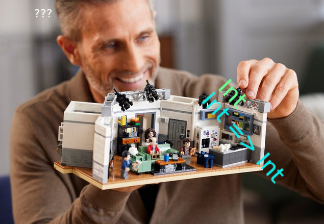
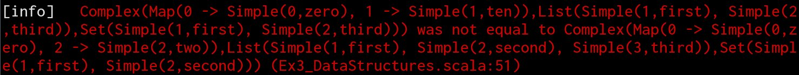

Difflicious
Readable and Flexible Diffs
Jacob Wang
Scala Love 2022
Hello
- Software Developer
at

- @jatcwang
- I like types, libraries and tools :)
It’s Friday afternoon…

“If it compiles, it works”
But the tests are failing…

That’s enough for the day
A career in goat farming looks great all of a sudden…
Tests should be nicer
- Tell what’s wrong at a glance
- Need more flexibility in our comparisons
- Difflicious to the rescue!
Difflicious Step-by-step
-
Add difflicious to your test dependencies
- difflicious-munit
- difflicious-scalatest
- Scala 2.13 & 3
-
Create
Differs (derive + configure)-
Differ.apply (e.g.
Differ[List[Int]]) to “summon” an instance
-
Differ.apply (e.g.
-
Use
Differs to diff values
A Simple Example
import difflicious.Differ
import difflicious.implicits.*
import difflicious.munit.MUnitDiff.*
case class Foo(i: Int, s: String)
// Create the differ
given differ: Differ[Foo] = Differ.derived
val expected = Foo(1, "a")
val actual = Foo(1, "b")
// Assert no difference between two values
differ.assertNoDiff(actual, expected)Foo( i: 1, s: "b" -> "a" )
Data structures diffs
- Seq, Map and Set are supported by default
- Seq pair by index when diffing
- Map pair by key when diffing
- Set uses
==
Vector(
Map(
"Bono" -> Set(
"Plant",
"Plates"
),
"Sven" -> Set(
"Plates",
)
),
)
From the diff we see that:
- Bono unexpectedly showed up with Plates
- Sven is missing
Pairing things up
- Sometimes, The default diffing behaviour of Seq and Set isn’t what we want
List(
Cat(
name: "Bono" -> "Lucy",
age: 7 -> 14,
),
Cat(
name: "Sven" -> "Bono",
age: 3 -> 8,
),
)
Pairing things up (2)
- We can use
pairByto get more meaningful diffs!
Ignoring fields
- Sometimes, we can’t or don’t want to compare certain fields
- e.g. Externally generated IDs, out-of-context data for current test
Ignoring fields (2)
Let’s ignore dog IDs from comparison
given Differ[Dog] = Differ.derived
val expectedDogs = List(Dog(0, "Wolfy"), Dog(0, "Bamboo"))
val dogData = List(DogData("Wolfy"), DogData("Bamboa"))
val actualDogs = registerDogs(dogData)
List(
Dog(
id: [IGNORED],
name: "Wolfy",
),
Dog(
id: [IGNORED],
name: "Bamboa" -> "Bamboo",
),
)
Deep configuration!
.ignoreAt(_.each.id)_.each.idis the “path expression”
- Allow us to easily tweak behaviour for the current test
There are other useful configuration methods like .configure and .replace
given Differ[Employee] = Differ.derived
given Differ[DogZoo] = Differ.derived
val newDogsDiffer: Differ[List[Dog]] = // a heavily configured Differ[List[Dog]]
val configuredDogZooDiffer = Differ[DogZoo]
// .configure allows you to "focus" on a differ inside to make multiple tweaks to it
.configure(_.employees)(_.ignoreAt(_.each.age).ignoreAt(_.each.hoursWorked).pairBy(_.name))
// .replace will replace the Differ at the given path
.replace(_.dogs)(newDogsDiffer)Path Expressions
| Differ Type | Allowed Paths | Explanation |
|---|---|---|
| Seq | .each | Traverse down to the Differ used to compare the elements |
| Set | .each | Traverse down to the Differ used to compare the elements |
| Map | .each | Traverse down to the Differ used to compare the values of the Map |
| Case Class | (any case class field) | Traverse down to the Differ of the field |
| Sealed Trait / Enum | .subType[SomeSubType] | Traverse down to the Differ for the specified sub type |
Putting it all together
Let’s track office capacity and that everyone is dressed correctly :)
sealed trait Person:
def name: String
object Person:
case class Contractor(name: String) extends Person
case class Employee(name: String, attire: String) extends Person
case class OfficeCapacity(
home: Set[Person],
office: Map[Int, Person]
)// Derive default differs
given Differ[Person] = Differ.derived
given Differ[OfficeCapacity] = Differ.derived
val officeCapacityDiffer = Differ[OfficeCapacity]
// Pants optional when WFH ;)
.ignoreAt(_.home.each.subType[Employee].attire)
// Pair people by name when comparing
.configure(_.home)(_.pairBy(_.name)) What a diff output might look like:
OfficeCapacity(
home: Set(
Employee(
name: "Sarah",
attire: [IGNORED],
),
Contractor != Employee
=== Obtained ===
Contractor(
name: "Paolo",
)
=== Expected ===
Employee(
name: "Paolo",
attire: [IGNORED],
),
),
office: Map(
1 -> Employee(
name: "Percy",
attire: "casual" -> "suit",
),
),
)
Final tips
-
Use
Differ.useEqualsif just want to compare a type by== -
IntelliJ: need to adjust some settings to not make all test failure color red
- Editor | Color Scheme | Console Colors | Console | Error Output, uncheck the red foreground color
Thank you!
- SoftwareMill
- Many inspirations from diffx
- EPFL & all other Scala 3 contributors
- Givens save keystrokes
- Macros are tremendous fun